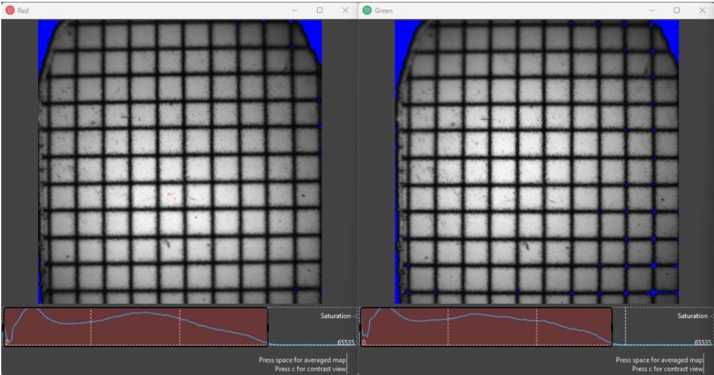
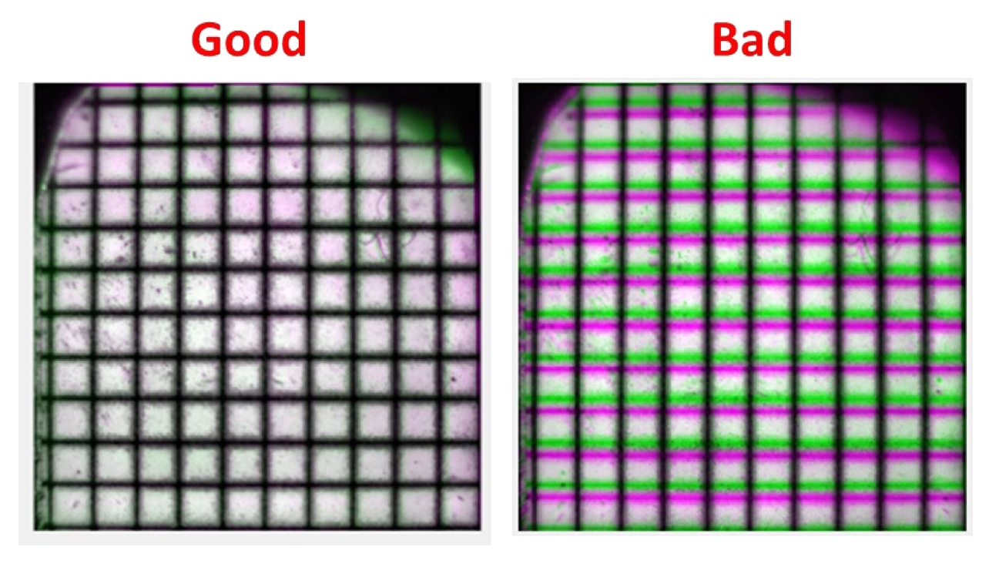
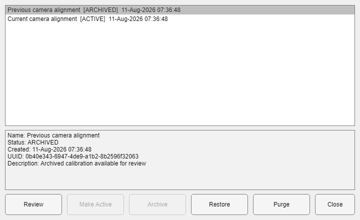

The current tool with an active rig calibration; the source action is exposed as Recalibrate.
This tool is dedicated to performing the coregistration of images from Dual-Camera Imaging systems from LabeoTech. Its goal is to ensure that the outputs of both cameras are aligned.
Choose Utilities > OiS 2-Cam Alignment. The active Save Folder must have AcqInfos.MultiCam=true. DataViewer passes the folder and, when available, rig plus project/subject/session context.
The current tool with an active rig calibration; the source action is exposed as Recalibrate.
Normally a one-time hardware calibration
Repeat the calibration when a camera is moved, the optical path changes, or image alignment no longer passes visual quality control. Once a calibration is active, a dual-camera data-import function such as run_ImagesClassification automatically applies it to camera-2 data during import.
Choose Start Initial Calibration and select only the raw acquisition folder. The tool reads the acquisition through ReadInfoFile, requires MultiCam=true, and classifies the recording with default settings in a temporary Save Folder. The temporary data are removed when calibration finishes, is cancelled, or fails; source recordings and existing Save Folders are never used as calibration output.
When a calibration is already active, the same control becomes Recalibrate. After confirmation, the current calibration is preserved and temporarily deactivated so the same raw-data preparation path produces unregistered camera images. A successful save activates the new resource and keeps the previous resource in history. Cancelling, closing the tool, or encountering an error restores the previous active calibration automatically.


| Control | Purpose |
|---|---|
| Start Initial Calibration / Recalibrate | Selects a raw dual-camera acquisition, validates it, and prepares temporary unregistered camera images. Recalibration is offered only when an active calibration exists. |
| Alternate View / False Color Overlay | Compares cameras without changing data. |
| Use enhanced contrast / Flip Horizontally | Prepares the alignment view. |
| Run Automatic coregistration | Estimates a candidate transform. |
| Transformation / Step size / Apply Step | Fine-tunes translation, rotation, or scale. |
| Save Coregistration | After confirmation, stores the transform as a rig-managed resource when rig context is available and updates local camera coregistration state. |
| Manage Coregistration Files | Reviews and manages the current rig's active, available, and archived calibration files. |
Manage Coregistration Files opens a compact file manager. Select one calibration to see its status, creation time, UUID, and description. The list is ordered newest first. File management is unavailable while initial calibration or recalibration is in progress.

Save Coregistration does not rewrite the raw calibration acquisition. It saves the transform and preview information as a managed resource for the selected rig. The workflow-owned temporary classified folder is deleted after the resource is successfully saved and activated.
When that calibration is applied during dual-camera import or by the controlled application helper:
The full calibration belongs to the rig's managed coregistration history. Its record includes tform, tformInfo, raw-source and creation information, and stored preview images. Use Manage Coregistration Files for lifecycle operations; do not move or delete managed files manually.
Use Alternate View and False Color Overlay to compare vessels and field-of-view borders from both cameras before saving. The local QC summary records translation in pixels, rotation in degrees, X/Y scale, and the transform determinant. These values help identify unexpectedly large or reflected transforms but do not replace visual inspection.
DataViewer waits for the utility to close and then reports closure. The currently displayed data is not automatically rewritten by this utility.
Rig-level resource
Camera coregistration belongs to the rig, not one subject. Verify the physical camera arrangement before making a transform active.